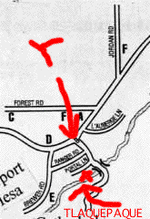

セドナ日記 〜 第２日目 98.5.5
TLAQUEPAQUE(トランパック)
 ボイントンキャニオンから帰ってくる。つぎは、夕日をエアポートメサから見ようと思うが、それまでの間に、土産物やとかにいって見る。セドナは観光地であるが、日本の観光地にある、あの「うらさみしい土産物屋」や、「さえない看板」とかがない。どれも、こぎれいな感じがする。また、建物には色の制限があるようで、ケバケバしい色は使われていない。おなじみのマクドナルドの看板も「赤と黄色」ではなく「くすんだ赤（岩山の色に近い）とくすんだ緑」の組み合わせだった。「落ち着きのある」町になっているのだ。
そんな、町にももちろん沢山の土産物やもあるが、どこか「冴えている」のである。「Y」から、200mほど南にあるのが、TLAQUEPAQUEである。ショッピングセンターというか土産物屋の集合というか、ただ、パンフレットには「Arts and Crafts Village」とある。ちょっと、こぎれいで、多分お値段も高めな感じがする店も多いのだが、何でもあるので、ちょっと立ちよってもいいと思う。
そのなかで、キッチン用品を売っている店があった。ナチュラルな石鹸があり、そのなかには、セドナの赤い石が混ぜられた（もちろん粉だと思うけど...）物があった。これを、お土産にとおもい、レジにいくと、そこにいたお姉さんが「こんにちは」と日本語で話しかけてくるではないか。ネイティブ・アメリカンのようだが、うまい日本語だなあとおもい、「どこで日本語勉強したのですか？」ときくと、なんと彼女は日本人だった。いやー、本当にはまっていて、ネイティブに方にしか見えのかったのだが、日本人でした。とはいいつつ、アメリカに来てからは長いようで（１０年以上だったと記憶している）生活のほうは、しっかりアメリカ人かもしれませんが...。実は、僕はセドナに来てから、全く日本人にあっておらず、最終的にも、このかたがセドナであった唯一の日本人だった。海外旅行にいくと、どこにいっても、日本人には会うものだが、セドナでは、観光客には会わなかったことになる。やっぱり、マイナーな所なのだと再認識したのであった。まあ、普通知らないよなー。知ってても、来ようと思う人は、相当珍しいと思うと、ちょっと、微笑ましい気分になったりした。
無事、石鹸を手にいれ、一応これで土産もの購入完了となった。